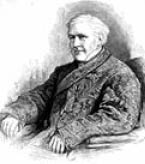
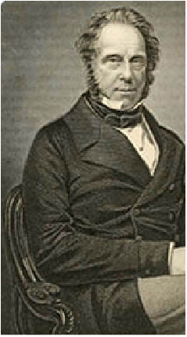
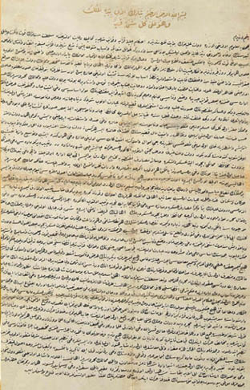
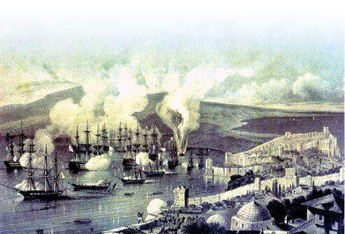
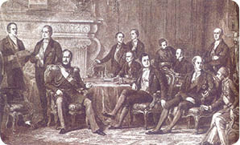
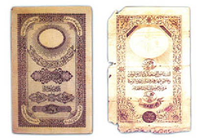

XX : ELÇİLERİN HÜKÜMDARLIĞI
1839-1876

Mahmud’un yerine daha gencecik olan on altı yaşındaki Abdülmecid geçti ve babasından ne kadar da farklı olduğunu göstererek çok farklı olaylara damgasını vurdu. Nazik ve kibar bir doğası vardı, fiziksel ve zihinsel gücü yoktu ayrıca güçlü bir karakterin yoksunluğu hissediliyordu. Hükümdarlığının ilk zamanlarında haremine olan aşırı düşkünlüğü yüzünden kuvvetten düşmüştü. Daha sonra ondan önce gelen hükümdarlar gibi alkol bağımlısı oldu. Babası yönetim gücünü tek eline almıştı ve vekillerini sık sık değiştiriyordu bu sebeple genç sultana babasının istek ve arzularını bildirecek, onun adıyla yönetmesini buyuracak hiçbir devlet görevlisi yoktu. Bununla beraber haremdeki hiçbir kadında da sultana doğru ya da yanlış kılavuzluk etmek için hevesli ve becerikli değildi. Aslında bu durum geçmişte hükümdarlığı süren sultanın yetersiz olduğu durumlarda çok da sık meydana gelmezdi. Söz konusu hükümdarlık, dönemi boyunca dış işlerinden ve bazı zamanlarda da iç işlerinden Büyük Güçlerin elçileri sorumlu gözüküyordu. Sahip oldukları yönetim gücü genelde ortaklaşa karar alabildiklerinde, fikir birliği sağlayabildiklerinde uygulanıyordu ki, bu da çok sık olmuyordu. Diğer zamanlarda ise, bir ya da birkaç kişi Abdülmecid’in zayıf zekâsını kullanarak, üzerinde çok büyük etki yaratıyorlardı. Buna en iyi örnek İngiliz Elçisi Sir Stratford Canning ve daha sonra da Lord Stratford de Redcliffe olmuştur, kendisi güçlü karakteri ve idareci kişiliği ile sultanı çok etki altında bırakmıştır. 1842 ile 1858 yılları arasında, kısa süreli olarak İngiltere’ye gidişleri ve Rus elçinin ayrıcalıklı etkileşimleri dışında, tartışılmaz bir egemenliği vardı.
Yeni Sultan babasıyla kıyaslandığında daha çok şanslıydı. Otuz bir yıl süren hükümdarlığı sırasında imparatorluğu ciddi bir toprak kaybı yaşamadı. Tabii hükümdarlığı boyunca meydana gelen iki önemli olaydan bahsetmek gerekir. Birincisi Mehmed Ali’nin hırsla meydana getirmek istediği projelerinin bastırılması, mesela Mısır’daki paşalığının babadan oğula geçme sistemine getirilen kısıtlamalar gibi. Bir diğeri ise tarihte Kırım Savaşı olarak biliniyor; Rusya ile yapılan savaş sonrasında neredeyse yirmi yıl boyunca Türk İmparatorluğu’nun Avrupa’da parçalanması geciktirilmiş oldu.
Bu olaylardan ilkine değinecek olursak, Mahmud’un hükümdarlığının son dönemlerinde Mehmed Ali’nin çok büyük bir güce sahip olduğu ve hatta Osmanlı soyunu bitirebileceği gözlendi. Suriye sınırlarında Nizip’te Türk ordusunun Asya’da bulunan başlıca bölümünü yok etti. Yaptığı vatan hainliği ile kötü bir şöhrete erişen Ahmed Paşa’nın sayesinde de Osmanlı donanmasını ele geçirdi. Bu aşamada kendisini ılımlı olarak addetti. Osmanlı Hükümeti’ne, eğer Mısır, Suriye, Şam, Adana ve Girit’in paşalığının verilmesi ve söz konusu görevin babadan oğula geçmesine izin vermesi koşuluyla, anlaşmaya varabileceğini belirtti. Türk donanmasını kendi hükümdarına yani sultana karşı kullanma niyetinde olmadığını da söyledi. İstediği şartlar yerine getirildiği takdirde donanmayı Osmanlı Hükümeti’ne geri verecekti. Eğer Sultan Mahmud hayatta olmuş olsaydı, şiddetle bahsedilen şartları reddederdi ve kendisine başkaldıran kuluyla savaşırdı. Ancak Abdülmecid’de böylesine bir krizle uğraşacak cesaret yoktu. Bu iki büyük felaket İstanbul’u ayağa kaldırdı. Dîvânda bulunanların çoğunluğu Mehmed Ali’nin şartlarını kabul etmeye hazırdı. Bu olay görülmemiş bir etkenin ortaya çıkmasıyla durduruldu. İngiltere, Fransa, Rusya, Avusturya ve Prusya gibi Büyük Güçlerin elçileri toplantı yaparak bir anlaşmaya vardılar. Buna göre Mehmed Ali’nin isteklerinin kabul edilmesi kendi hükümetlerinin çıkarlarına aykırıydı. Osmanlı Hükümeti’ne, Mehmed Ali’nin isteklerinin yaratacağı problemlerin kendi hükümetleri tarafından görüşülmek istendiğini ve sultanın Mehmed Ali ile herhangi bir anlaşmadan kaçınmasını söylediler. Bu durum dîvân tarafından onaylandı. İsyankâr paşa ile sultan arasındaki uzlaşma elçilerin eline kaldı. Türk İmparatorluğu bir nevi vesayet altına alındı.
Bu durumda İmparator Nikolay’ın davranışı diğer güçler içersinde en barışçıl olanıydı. Diğer güçlere karşı çok samimi bir davranış sergileyerek, onlar Mısır sorununu entrikayla çözmek için toplandıklarında, Bükreş ve Akkerman Antlaşmalarıyla elde ettiği özel haklar için ısrarcı olmayacaktı ve diğer güçlerin Çanakkale’deki savaş gemilerini dahil etmeyecekti. Ayrıca İstanbul ve Boğaz’da bulunan az da olsa askerî birliklerini çekecekti. Büyük Britanya adına Lord Palmerston Rus imparatorunun bu hareketini ne kadar takdir ettiğini ifade etti. Sonuç olarak Büyük Güçleri temsil edenler arasında Londra’da bir konferans meydana geldi. Konferansı Büyük Britanya adına Lord Palmerston ile Rusya adına Baron Brunnow yönetti. Konferansın ilerleyen zamanlarında Fransa’nın ne kadar farklı düşündüğü ortaya çıktı. Rusların İstanbul’u hakimiyeti altına almasına son derece karşı çıkan Fransa, Mehmed Ali’nin Suriye ve Mısır’ın paşalığını ve kendi soyundan devam etme isteğini her zaman destekledi. Ayrıca gizli bir şekilde Osmanlı Hükümeti’nden ayrılıp özgürlüğüne kavuşması için de cesaret verdi. Şimdi ise diğer güçlerin kararlarını veto ederek Mehmed Ali’ye destek oluyordu. Eninde sonunda Rusya, İngiltere ve Avusturya; Fransa ile anlaşma sağlayamayacaklarını anladılar ve onun oyunu almadan harekete geçmeye ve Mehmed Ali’yi Suriye’yi boşaltması için zorlayarak, Türk donanmasını da geri vermesine karar verdiler. Uzun süren tartışmalar sonunda üç büyük güç 15 Temmuz 1840 yılında kararlarını verdi. Mehmed Ali’ye ültimatom çektiler ve Osmanlı Hükümeti’ne bağlılığını bildirmesini istediler. Eğer on gün içersinde çekilen ültimatomu -yani ordusunu Suriye’den geri çekecek, Türk donanmasını Osmanlı Hükümeti’ne geri verecek, böylece Mısır’ın paşası olacak, paşalığı babadan oğula geçebilecek, ayrıca ömür sürdükçe boyunca Suriye’nin de paşası olacak- yerine getirmezse Mısır ve Suriye için sunulan teklifler geri çekilecek ve ömrü boyunca sadece Mısır’ın paşası olacak. Bunun yanında eğer herhangi bir gecikme ya da reddetme olursa üç büyük gücün donanmalarının Suriye ve Mısır’ı abluka altına alacağını açıkladılar. Üç gücün çektiği ültimatom Fransa’da duyulunca büyük bir kızgınlığa sebep oldu. Daha da fazlası, Mehmed Ali ültimatomu kabul etmeyince yaşandı. Diğer iki gücün savaş gemileri tarafından desteklenen İngiliz donanması Suriye kıyılarında kendini gösterdi. Bu Fransa için aşağılayıcı bir olaydı. Söz konusu ülke ile İngiltere arasında savaş çıkması an meselesiydi. Fransız Senatosu’nda çok şiddetli anlar yaşandı ve Fransız gazetelerinde çok sert yazılar yazıldı. Ancak Fransa’nın bir deniz savaşına hazır olmadığını öğrenen açık gözlü hukuk danışmanları eninde sonunda ikna oldu, sahip oldukları donanma kesinlikle Akdeniz’de İngiliz donanmasıyla aşık atamayacak ve Suriye’ye asker indiremeyecek kadar kötüydü.

Lord Palmerston Engraving
Çoğunlukla Lord Palmerston’un isteği üzerine üç güç Fransa’nın tehditlerine boyun eğmemeye karar verdi ve Mehmed Ali’ye karşı güç kullanmak için sahip oldukları kanıtlarda ısrarcı oldular. Fransa ile İngiltere arasındaki olası savaş engellendi. Louis Philippe ( o zamanlarda Fransa kralıydı) saçma bir gözlem yapıp kendini “dünyada savaşla tehdit etmek ile gerçekten savaşa gitmek arasında farklar vardır” sözleriyle rahatlattı.
Bu arada Amiral Stopford ve Napier komutasındaki İngiliz donanması Beyrut semalarında belirdi, bölgeyi bombaladı ve kalelerini yerle bir etti. Napier komutasında iki bin asker karaya ayak basarak Mısır kuvvetlerini bozguna uğrattı. Aynı operasyon bir kaç gün sonra Akka’da gerçekleşti. Söz konusu güçlü kalelerin savunmaları İngiliz donanmasının silahları tarafından indirildi. Daha sonra Napier komutasında altı bin asker karaya ayak bastı ve İbrahim’in ordusunu yenilgiye uğrattı. Akka ve Beyrut savaşlarında bir ilk daha yaşandı ve buharlı gemiler deniz savaşlarında boy göstermeye başladı. Müttefik birliklerine, Mehmed Ali’nin baskıcı yönetiminden bunalan isyankâr Suriye halkı yardım etti. Mısır ordusunda ve İbrahim’in ordusunda da taraf değişikliği çok yaygınlaşmaya başladı. İbrahim’in ordusu başlarda yetmiş beş bin askerden oluşuyordu; ancak daha sonra yirmi beş bin kişiye indi.
Suriye kıyılarında yapılan operasyonlardan sonra Napier ve onun süvari birliği İskenderiye önlerinde ortaya çıktı ve bölgeyi topa tutmakla tehdit etti. Ancak bu zamana kadar Mehmed Ali çoktan üç büyük güce ve sultana karşı başarılı bir savaş yürütemeyeceğini anladı. Ardından Amiral Napier ile anlaşmak için görüşmelere başladı. Sultanın onu ve ondan sonra gelecekleri Mısır’ın paşası olarak kabul etmesi şartıyla Suriye’den tamamen çıkmayı ve Türk donanmasını Osmanlı Hükümeti’ne vermeyi kabul etti. Bu süre zarfında Türkiye’nin sultanı da bir ferman yayınlayarak Mehmed Ali’nin bütün paşalık görevlerinden alındığını duyurdu. Bu genel olarak pek bir anlam taşımıyordu, dört ayrı olayla paşanın görevden alındığı açıklandı; fakat hiçbir sonuç doğurmadı. Sonunda 20 Eylül 1841 yılında Mehmed Ali ve üç güç arasında bir anlaşma sağlandı. Sultanın onu görevden almasına rağmen, Mehmed Ali ondan sonra gelecek olan ailesi Mısır’ın paşası olarak kaldı; ancak diğer devletlerden mahrum bırakıldı. Osmanlı Hükümeti’ne vergi vermek zorunda kaldı. Vergi, Mısır’ın devlet gelirinin dörtte biri olarak ayarlandı, daha sonra yıllık toplam dört yüz bin sterlin olarak sabitlendi. Suriye’den ordusunu çekmek zorunda kaldı ve Mısır’da on sekiz bin kişilik askerî birlikten daha kalabalık bir ordu barındıramayacaktı.
Üç gücün birleşerek bu duruma karışmaları ve söz konusu problemi sultanın başından almaları, açıkçası sultan için dîvânda alınan kararlardan çok daha iyi bir anlaşma oldu. Suriye Mehmed Ali’nin yönetiminden kurtularak tekrardan Osmanlı Hükümeti’nin kontrolü altına girdi. Bunun yanında Mısır pratikte özgürlüğünü kazandı, sadece sözde bağlı olduğu sultana vergi ödemekle yükümlüydü. Bu sonuca sultanın ordusu tarafından varılmadı, üç büyük gücün hareketleri sayesinde oldu. Lord Palmerston’un uyguladığı politika ve idarî becerileri sayesinde Fransa’nın vahşi isyanlarına göğüs gererek zorlukları aştılar. Mehmed Ali ile yapılan son anlaşmayla ki, bu anlaşma onun kurguladığı amacını ortadan kaldırıyordu, Mısır üzerindeki idaresi de azalmıştı. Bu anlaşma sebebiyle yaşlı adamın kalbinin kırıldığı söylenir. Sekiz yıl daha hayatını devam ettirdi; ancak o yıllar da depresyon ve kasvet içersinde geçti, mükemmel ve yetenekli oğlu İbrahim’in ölümüyle de durumu kötüleşti. Bu durumda şunu eklemek gerekir, 1841 yılında Mısır için yapılan ayarlamaların ardından, Rusya ve Türkiye de dahil olmak üzere diğer üç büyük güç ile yapılan bir kongrede bir anlaşmaya varıldı. Buna göre; Türkiye’ninkiler hariç bütün ülkelerin savaş gemileri Cebelitarık Boğazı ve Karadeniz’den geçemeyecekti.
1841 yılında büyük problemler de ortadan kalktıktan sonra, Türkiye’de on iki yıl boyunca sükunet hakim oldu. Sadece paşalar tarafından ara sıra meydana gelen ayaklanmalar meydana geldi ya da sürekli hatalı bir yönetime maruz kalan halk umutsuzluğa düştüğünde olaylar yaşandı. Ayaklanmalar, kendisini bu konuda ne kadar başarılı olduğunu kanıtlayan Serasker Ömer Paşa tarafından bastırıldı. Aynı dönemde Osmanlı Devleti’nde bulunan İngiliz Elçi Sir Strarford Canning sultanın üzerinde şahsî bir etki yaratmıştı. Abdülmecid eşi benzeri görülmemiş bir karaktere sahipti ki, sözde, devleti yönettiği söylenirdi.
Mahmud’un hükümdarlığı zamanında Canning üç ayrı olayda İngiliz Hükümeti’ni İstanbul’da temsil etmişti. Canning 1812 yılında henüz çok gençken Tam Yetkili Vekil olarak sultanı Rusya ile anlaşmaya teşvik ederek Bükreş Antlaşması’nın imzalanmasını sağlamıştı, böylece itibarı artmıştı. Bu antlaşma sonuncunda Çar elleri bomboş bir şekilde ordusunu Tuna Nehri’nden çekmek zorunda kaldı. Ayrıca orduyu Napolyon’un meşhur Moskova seferi için kullanmasına da yol açtı. Bu durum, Rusya istilasının yenilgiyle sonuçlanmasına katkıda bulundu.
Daha sonra Yunanistan’ın bağımsızlığının tanınmasının ardından sınırlarının çizilmesiyle meşgul oldu, böylece kendisini “Yunan Hayranı” olarak gösterdi. 1842 yılında dönemin İngiltere Dışişleri Bakanı olan Lord Aberdeen elli yedi yaşındayken tekrardan Osmanlı Hükümeti’ne elçi olarak yollandı. 1858 yılına kadar iki kere kısa süreli olarak bölgede kaldı. Osmanlı’da kaldığı on altı yıl boyunca “Muhteşem Elçi” unvanını taşıdı. Osmanlı İmparatorluğu’nda bulunan Hıristiyan halk tarafından “Padişahların Padişahı” olarak da anılırdı. İngiliz Dışişleri Memurluğu’nda çalışan en seçkin elçiydi. Bulunduğu devletin hükümeti ile görüşürken, elçi olarak çok daha fazla mesuliyet üstlenirken ayrıca kendi hükümetinin politikalarını belirtirken eski geleneklere bağlı bir diplomattı. Kendisini, hükümdarını temsil eden kişi olarak tanımlardı, o günün geçici bakanlarını değil. Tavırlarıyla da Türkleri etkilerdi. Görkemli ve asil bir görünüşü vardı. Yüzünden soyluluk ve saflık akıyordu. Gözlerinde öyle derin bir bakış vardı ki, birlikte iş yaptığı insanların içine nüfuz ederdi böylece insanların asıl amaçlarını örtbas etmesini engellerdi. Metotları her zaman dürüst ve onurluydu. Yine de siyaset sanatını çok iyi bilirdi, bu konuda hünerliydi, kişiyi yine kişinin sahip olduğu silahla alt ederdi. Asla düzenbazlığa başvurmadı. Türkler onun sözüne hiç şüphe etmeden inanmayı güvenmeyi öğrenmişti ve kendi ülkeleri için elçinin iyi niyetler beslediğine inanmışlardı. Türk bakanlarına son derece saygılı davranırdı. Ellerini kana bulamış olan bir kaçıyla ise herhangi bir iletişime girmeyi reddederdi. İstekleri Osmanlı Hükümeti tarafından kabul edilmediğinde doğrudan sultana gidip, oldukça zorba olan sultanı zarif, zayıf, iyi niyetli birine çevirerek razı ediyordu. Elçilikteki görevine getirttirildi zaman iki ana olayla uğraşmak durumunda kaldı. İlki İngiltere’yi ilgilendiren bir durumdu, böylece Rusya tarafından gelen herhangi komplolu plana karşı çıkmak onun göreviydi. Diğeri ise Osmanlı’yı kendi içinde reformlar yapmasına teşvik ederek hatta bazı durumlarda zorlayarak Avrupa’da bulunan diğer ülkelerle aynı seviyeye gelmesini sağlamaktı. Ancak Osmanlı’nın kendi yokluğunda bunu sağlayamayacağının farkındaydı. Ciddi bir şekilde bunun mümkün olduğuna da inanıyordu ve kendisi de bu görev için atanmış biriydi. Bu karakterdeki bir elçinin, yani onun çok nitelikli ve erdemli oluşu İngiliz politikası için çok büyük bir utanç kaynağıydı. Hükümet onu kontrol altında tutamıyordu. Bazıları onun için Shakespeare’nin şu dizelerini kullanmıştır:
Eğer yüce adamlar Jupiter’in şimşekleri gibi kükreyebilirse,
Onun yaşadığı yerde asla sessizlik olmaz.
Canning ülkesinin gücünü kendi politikası için kullandı. Hiç şüphesiz ki, Büyük Britanya ile Rusya arasında çıkacak olan savaşın yegane sebebiydi.
Bu esnada Canning’in ortaya çıkardığı yönetim ve hukukî alanda yapılan reformlar, imparatorluğun devam etmesi için vazgeçilmez olduğunu düşünen dürüst ve yetenekli birkaç Türk devlet adamı tarafından kabul gördü. Mahmud hayatının son dönemlerinde bu durumu gerekli görerek yapılan yeni düzenlemelere, reformlara onay vermiştir. Ancak yürürlüğe geçirene kadar, ölüm kapısını çalmıştı bile. Bu prensiplerle ilgili oğlunu haberdar etmiş olacak ki, Veziriazam Reşid Paşa’nın da tavsiyesi üzerine Abdülmecid tahta gelir gelmez Mahmud tarafından hazırlatılan reformlarla ilgili önemli bir bildiri yayınladı. Bu reformlar Gülhane Hatt-ı Şerif (Tanzimat Fermanı) olarak bilinir. Hiçbir ırk ve mezhep gözetmeksizin bütün kullarının eşit olacağını buyurur. Reform yaşamlarının, gururlarının ve mallarının güvenliğini, adil vergilendirmeyi, bütün mahkumların halka açık olarak yargılanmasını, mal ve mülkün elde tutulmasını ayrıca vasiyet ile devredilmesini ve sistematik olarak askere alım yapılmasını kapsıyordu. Söz konusu yönetimsel reformların ilkelerin hazırlanması için bir konsey oluşturmuştu. Ancak bu büyük reformlar bildirgesinin tek eksiği, bildirgeyi vasiyetine koymayan Mahmud’du. Reşid Paşa zorla istifa etti. Onun yerine geçen Rıza Paşa ve birlikte çalışanlar irticacı, fanatik ve Hıristiyanlık karşıtıydı. Türkiye’de yapılması beklenen diğer reformlar gibi Hatt-ı Şerif’te geçerliliği kalmamış yasadan başka bir şey değildi artık. Rıza son derece yozlaşmış, rüşvet yiyen hatta hazineden meblağsı belli olmayan paralar çalan bir adamdı. Böylece Canning’in yegane görevi bu adamı ve zimmetine para geçiren çetesini görevden aldırıp Reşid Paşa’yı tekrardan göreve getirmek oldu. Hıristiyanlığa karşı nefret duyan vekiller yüzünden Hıristiyan halk için reform yapmak imkânsızdı. Hıristiyan dillerinden herhangi birini konuşan Türkler dahi devlet görevinden uzaklaştırılıyordu.

Tanzimat Fermanı
Canning’in sürdürdüğü kuvvetli ancak uzun ve sabır gerektiren çabalar sonucunda Abdülmecid idare etmenin yolunu buldu ve vekillerin değişmesini sağladı, reformları bu ülkede geçirebilecek olan tek devlet adamı Reşid Paşa’yı geri almayı başardı. Ayrıca Reşid Paşa prensipleri geçirmek için Canning’in yardımını her an istedi.
İstanbul’da 1852 yılında Fransa ve Rusya temsilcileri arasında İsrail’deki Kutsal Kabir Kilisesi’nin ve etrafındakilerin muhafızlığını hangi ülkenin yapacağına dair diplomatik tartışmalar meydana geldi.
1853 yılının başlarında İmparator Nikolay söz konusu tartışmaları kullanarak Osmanlı Hükümeti’ne daha büyük bir problem yaratma niyetindeydi. Kendi yaptığı planların İngiltere’nin karşı çıkmamasını umut ediyordu. St Petersburg’da kendi saltanatının İngiliz Elçi’si Sir Hamilton Seymour ile görüşerek fikirlerini sundu:
Türkiye’nin dış ilişkileri son derece düzensiz. Ülke kendi kendine parçalara bölünüyor. Bu ülkenin çöküşü gerçekten çok talihsiz bir durum. Bu ilişkiler için Rusya ve İngiltere kesinlikle mutabakata varmalıdır. Birbirimizi haberdar etmeden kesin kararlar alınmamalıdır.
…ellerimizde hasta bir adam var, hem de çok hasta bir adam. Ayrıca, size samimi olarak söylüyorum, gerekli ayarlamalar yapılmadan ellerimizden kayıp giderse gerçekten çok büyük talihsizlik olur.
Yapılan imalardan sonra görüşme bitti. Birkaç gün sonra özel bir eğlence esnasında tekrardan aynı görüşler ortaya atıldı:
İmparatoriçe Katherine’yi çok mutlu eden rüyalarını ve planlarını biliyorsunuzdur. Bu arzuları zamanımıza kadar sürdü. Zamanında bu denli büyük toprakları vasiyet olarak alırken onun hayallerini ya da niyetlerini diyelim isterseniz, burada belirtmedim. Bilakis benim ülkem çok geniş her konuda son derece zengin, sahip olduğum topraklardan daha fazlasını istemek ya da daha fazla güce sahip olmak son derece gereksiz. Bilakis bunu siz söyleyen ilk kişi olacağım, bizim büyük ve hatta tek tehlikemiz zaten hali hazırda çok büyük olan bir imparatorluğun daha da genişlemesidir.
Türkiye çok yakınımızda bulunuyor, ayrıca şu anda bulunduğumuz durum göz önüne alınırsa daha iyi bir durum olamazdı. Türklerin fanatikliklerinden ve ya askerî atılımlarından korkacak bir durumumuz yok. Ancak ülke hâlâ yeteri kadar güçlü ya da şimdiye dek özgürlüğünü muhafaza edecek ve diğer ülkelerin saygıyla davranacağı kadar güçlü.
O imparatorlukta birkaç milyon Hıristiyan var ve onlara göz kulak olmak için özellikle çağırıldım ki, bu hak bana ayrıca bir anlaşma ile verildi. İçtenlikle söyleyebilirim ki, kendi hakkımı kullanırken son derece ılımlı ve tedbirli davrandım. Özgürce şunu da itiraf etmeliyim, ara sıra zoraki durumlar meydana geliyordu ki, son derece uygunsuz durumlardı. Aşikar olan görevimizden asla geri çekilmeyiz…
Türkiye kademe kademe dermanı kalmamış bir ülke haline geldi, uzun süren hayatı boyunca bizler gibi o da gayretliydi, ansızın ellerimizde ölebilir. Ölü olan bir şeyi tekrar diriltemeyiz. Şunu da ilave etmek isterim, Türk İmparatorluğu bir kere çöktüğü zaman bir daha kalkmamak üzere çökecek. Bu nedenle, daha önceden planlanmış bir olay yaratmak iyi değildir, bir karmaşa, karışıklık ve kesinlik kazanan bir Avrupa Savaşı’na maruz kalmak ki, hiç beklenmedik bir anda, daha önce planlanmadan olması bir felaket yaratır. İşte ben de tam bu konuda hükümetinizi bilgilendirmenizi arzu ediyorum.
Şimdi sizinle bir arkadaş, bir beyefendi olarak görüşme arzusundayım. Eğer İngiltere ile birlikte bu konuda bir anlaşmaya varabilirsek, geri kalanlar benim için çok küçük detaylardır. Diğerlerinin yaptıkları ya da düşündükleri beni ilgilendirmiyor. Samimiyetle ve basitçe size söylemek gerekirse, eğer İngiltere şu günlerde kendisini İstanbul’da düşünüyorsa, buna izin vermem. Aynı şekilde ben de bir arazi sahibi olarak şunu söyleyebilirim ki, tam anlamıyla İstanbul’u elime almaya niyetli değilim. Ancak işgalci olarak daha önceden hükümleri belli olmamış bir durumda, eğer her şey şansa bırakılırsa, İstanbul’u işgal etmek durumunda kalabilirim.
20 Şubat’ta gerçekleştirilen diğer bir konuşma esnasında İmparator şunları söylemiştir:
Eğer hükümetiniz Türkiye’nin bir şekilde varlığını sürdürmesi gerektiğine inanıyorsa, hükümetiniz yanlış bilgilendirilmiş demektir. Sizin için tekrar ediyorum, hasta adam ölüyor, ve asla bu olayı şaşkınlıkla karşılamamalıyız. Bir anlaşmaya varmamız gerekiyor.
Bir sonraki gün şunları ekledi:
Beylikler benim korumam altında olan özgür eyaletlerdir aslında. Bu şekilde de devam edecektir. Sırbistan da aynı yönetim şekline sahip olabilir. Hatta Bulgaristan, bu tip bölgelerin aynı şekilde özgür olmamaları için bir sebep göremiyorum. Mısır’a gelirsek de bu bölgenin İngiltere için çok büyük önem taşıdığını anladım. Bu sebeple şunu söyleyebilirim ki, Osmanlı egemenliğinin yıkılması ve imparatorluğun çökmesiyle İngiltere Mısır’ı alabilir. Böylesi bir teklife karşı çıkmam. Aynı şeyi Candia (Girit’in eski adı)için de söyleyebilirim. O bölgenin de İngiliz egemenliğine girmemesi için bir sebep göremiyorum.
Sir Hamilton Seymour, imparatorun söylediklerini kendi hükümetine aktarır:
Gözlemlerimden yola çıkarak, benim anladığım Mısır, İngiltere için İngiliz Hindistan’ı ile anavatan arasındaki iletişimi güvenli bir şekilde sürdürmesinden dolayı önemlidir ve bunun üzerine hiç çıkmamıştır.
“Pekala” dedi imparator; ardından da şunları ekledi: “Bu konuyla ilgili hükümetine tekrardan mektup yaz, - hiç tereddüt etmeden konu hakkında daha geniş bilgi ver. İngiliz Hükümeti’ne güveniyorum. Onlardan bir sözleşme ya da toplantı istemiyorum; bu durum sadece iki hükümet arasında ihtiyaç durumunda kullanılmak üzere fikir alışverişidir. Centilmen sözü ki, bu bizim için yeterlidir.”
Sir Hamilton Seymour yapılan görüşmeleri Dışişleri Bakanlığı’na rapor ederken kendi fikirlerini de şu şekilde aktarmıştır:
Başka türlü olması zor gözüküyor, ancak imparator sabırlı bir şekilde ısrarla yakın komşumuzun çöküşünün çok yakın olduğunu ve kendi planlarına göre gerçekleşmek zorunda olduğunu söyledi, parçalanma zamanında ya da parçalanması için gerçekleşen olaylarda kontrol altında olmalı.
İngiliz Hükümeti bu önermelere Dışişleri Bakanı Lord John Russell’ın aracılığı ile cevap verdi. İstanbul üzerinde veya sultanın sahip olduğu herhangi bir toprak parçası üzerinde hak iddia etmeyeceklerini belirttiler. Çar tarafından verilen güvenceden de son derece memnun oldular. Osmanlı İmparatorluğu’nun çok yakında yok olacağına dair düşüncelerle mücadele ettiler. Bu tür bir olayın doğuracağı ya da doğurmasının beklendiği olaylar konusunda tartışılmasına karşı çıktılar. Sonunda İngiliz Hükümeti büyük bir nezaket örneği göstererek, katı, ancak çok açık bir şekilde kesin olarak Doğu’daki sorunlar için Rusya ile gizli bir anlaşma içersine girmeyi reddetti.

Lord John Russell
Devam eden muhakemat içersinde Lord John Russell’ın yerine Dışişleri Bakanı olan Lord Clarendon, Sir Hamilton Seymour aracılığı ile (23 Mart 1853) fikirlerini sunmuştur:
Türkiye’nin müttefikleri bu ülkeye karşı sadece sabırlı olmalıdır, sultanın bütün saygınlığını ve özgürlüğünü aşağılayacak bir tutum içersine girilmemelidir. Bir dost gibi ülkeler birbirlerini desteklemelidir, aynı zamanda bu dostane davranış bireyler arasında da olmalıdır, zayıf olanın güçlü olandan beklentisi budur. Sadece varlığını devam ettirmesi için değil aynı zamanda dağılacağına dair haberlerle endişe duymasını da önlemeliyiz.
İngiltere Hükümeti’nin Türkiye’de reformlarla yenilenmiş bir hükümet görmek için umutlu göründüğü söylenebilir, Rus Hükümeti içinse aynı şeyler söylenemezdi.
Söz konusu konuşmalar çok önemli olduğu için ve devamında yaşanacak olaylar ile bağlantılı olduğu için bu kadar uzun alıntı yapıldı. Zamanında İngiliz Hükümeti üzerinde kötü etkisi vardı, aynı zamanda halka açıklandıktan sonra kamuoyu da hoş karşılamadı.21 Rus imparatorunun Doğu Sorunu’nu öne sürmesinde kasti planları bulunduğunu, birkaç yıl önce aynı Polonya’ya yapıldığı gibi Osmanlı İmparatorluğu’nun da bölüştürülerek parçalanması niyetinde olduğunu belirtti. Polonya olayında ise en büyük parçayı Rusya almıştı.
21 Yukarıda geçen görüşmeler parlamento tarafından raporlanmıştır,1854, Eastern Question (Doğu Sorunu), avam Kamarası, 84.
İmparator Nikolay’ın politikası daha makul bir bakış açısıyla gözlenebilir. Daha sonra meydana gelen olayların sonucunda imparatorun Türk İmparatorluğu için hasta demesi çok yerinde bir nitelendirmeydi. Bu zamandan sonra imparatorluk neredeyse Avrupa’daki bütün egemenliğini kaybetti. Hatta ileriki dönemler Rusya önceden kaybettiği çok küçük bölgeleri geri aldı. Bu duruma bağlı olarak, 1852 yılında İngiliz Hükümeti, Osmanlı İmparatorluğu’nun parçalanarak paylaşılması esasına dayalı bir istekleri ve niyetleri olmadığını açıklamış olsa da Çar’ın teklifine yakın olarak önemli miktarda bölgeleri aldı. Bu yerler arasında Mısır, Sudan ve Kıbrıs adası vardı.
1853 yılının başlarında Rus Çar’ı Osmanlı İmparatorluğu’na özel bir elçi yolladı, Prens Menshikov kaba ve entrikacı bir askerdi. Prens Fransa’nın karşı çıkmalarına rağmen, Kutsal Kabir’in muhafızı olmak istemesi ve ileri giderek çok daha ciddi bir istekte bulunması, yani Osmanlı İmparatorluğu’nda bulunan Yunan Kilisesi mensuplarının hamiliğini almak için ısrar etmesi yönünde bilgilendirildi.
Prens Menshikov’un gizli ve son derece özel görevi hiç şüphesiz ki, Çar ile Sir Hamilton Seymour arasında geçen görüşmenin sonucudur. Böylece 1852 yılında İstanbul’daki elçilik görevinden istifa eden Canning asalet rütbesine haiz olarak Lord Stratford de Redcliff unvanını almıştır, daha sonra tekrardan Osmanlı İmparatorluğu’na elçi olarak yollanmış, şu anda İngiltere’nin Dışişleri Bakanlığı’nı yürütmektedir. Lord Stratford Dışişleri Ofisi’nin bütün belgelerini, direktiflerini kendisi hazırlamıştır. İngiltere’nin sahip olduğu ahlakî etki, istekler doğrultusunda belirlenen yeni pozisyon, Rusya ve Fransa’nın kutsal mekânları ve diğer sebepleri ile birlikte, düşmanca olmasa da diktatörlük rejimi, kendisini tarafsızlığa ittiği düşünülüyor.
Kutsal Mekânlara yerleşim durumu konusunda serbest bırakıldı. Kendi vereceği hükümlere ve sağduyusunun ona iyi bir şekilde yol göstereceğine güvendiler. Bazı güçlerin tehditkâr davranışları ve biriken yakınmaları için Osmanlı İmparatorluğu’nun kendi kötü yönetimine bakması gerektiği hatırlatılmalıdır. Ayrıca imparatorluğun Hıristiyan halkı ardı ardına gelen başkaldırılarda bulunmaktadır. Osmanlı Hükümeti gelecekte barış ve bağımsızlık öngörmek istiyorsa, bu tür krizlere karşı ihtiyatlı ve samimi, güvenilir ve doğrucu yaklaşımlarda bulunmalıdır. Türkiye yönetiminde bazı reformlar gerçekleştirmek için danışmanlık görevine getirttirildi, böylelikle İngiliz milletine olan sempati ve yakınlık sağlandı.
Türk Hükümeti’nden kaynaklanabilecek olan mutlak bir tehlikeye karşı, İngiliz elçisine, Malta’da bulunan İngiliz donanmasını hazır bir şekilde tutabilmesi için yetki verildi. Ancak majestelerinin hükümetinden olumlu bir yanıt almadan donanmayı Çanakkale Boğazı’ndan geçmesini sağlayamazdı.
Lord Stratford İstanbul’a vardığında ona yardımcı olan Reşid Paşa’nın yeni Rus elçisi olaylarıyla veziriazamlıktan alındığını ve yerine mevcut güce daha uygun bir vezirin getirildiğini öğrendi.
Prens Menshikov biraz gözdağı vererek ve büyük ihtimalle rüşvetlerin yardımıyla sultanın hükümeti üzerinde hatırı sayılır bir şekilde komutayı etki altına almıştı. Osmanlı İmparatorluğu’na karşı sunduğu taleplerinin gizli kalması konusunda ısrarcı oldu, ayrıca İngiliz elçisinin bu taleplerde haberi olursa da İstanbul’u terk edeceğini bildirerek tehditler savurdu. Bunun yanında Lord Stratford’un Rusya’nın planları ve talepleri konusunda bilgi edinmesi hiç de zor olmadı. Yunan Kilisesi’nin hamiliğini yaparken ve Kutsal Mekânların bölünmesi konusunda eşsiz bir politik beceri gösterdi. Rusya, Fransa ve Osmanlı İmparatorluğu arasında Kutsal Kabir Kilisesi hakkındaki anlaşmazlığa bir son verdi. Geriye sadece çok önemli bir koruyucu kaldı. Bu durum Çar Nikolay ile Lord Stratford arasındaki çekişmeyi ve nefreti daha da kötüleştirdi. Asıl büyük tartışma konusu ise Türkiye üzerinde İngilizler mi yoksa Ruslar mı baskın olacaktı? Ayrıca Hıristiyan halkın güvenliğini, reformları ve koruyuculuğu kim ele alacak, bu konuda da çekişmeler mevcuttu. Bay Lane Poole tarafından yazılan Lord Stratford’un biyografisini okumak imkânsız ya da Mr. Kinglake’in Kırım Savaşı’na sebep olanları çok iyi bir şekilde anlatan meşhur bölüm de okunamaz; çünkü İngiltere’nin bu kriz anındaki politikasını eklememiştir. Bunun sebebi ise kriz politikası Londra’da bulunan İngiliz Kabinesi tarafından değil İstanbul’da bulunan elçilikteki Lord Stratford tarafından yönetilmiştir. Prens Menshikov, deneyimli ve ihtiyatlı bir diplomat olan Lord Stratford gibi Osmanlı İmparatorluğu’nda ardı ardına gelen mücadelelerle boy ölçüşebilecek durumda değildi. Prens’in her teşebbüsü bir felaketti.
Mayıs başlarında, Stratford’ın varışını takiben, kendisinin talebiyle Türk kabinesinde bir yeniden yapılanmaya gidildi. Rusya’nın adayı azledildi. Rıfat Paşa sadrazam olarak onun yerini aldı ve Lord Stratford’ın ana müttefiki Reşid, dışişleri bakanı olarak yeniden göreve getirildi.
Bâb-ı Âli, Stratford’ın tavsiyesiyle Rusların taleplerine direnmeye karar verdi. Ortodoks Kilisesi mensuplarını koruma yönündeki talebin kabul edilemez olduğu resmî olarak bildirildi. Prens Menshikov’a bu karar iletildi ve kendisi 21 Mayıs’ta Bâb-ı Âli ile diplomatik ilişkileri keserek, İstanbul’u bir hışımla terk etti. Bunu, 31 Mayıs’ta Bâb-ı Âli’ye Rus Devleti’nden gönderilen ve Menshikov’un taleplerinin kabul edilmesinde ısrar eden küstah bir resmî mesaj izledi. Stratford’ın isteğiyle, Bâb-ı Âli yine red cevabı verdi ve bunun üzerine Rus ordusu 3 Temmuz’da Prut Nehri’ni geçerek Eflak ve Boğdan’ı işgal etti. Birkaç gün sonra yayınlanan bir tebliğde, Çar, fetih niyetiyle hareket ettiğini yalanlayarak, vilayetleri işgal edişini Türkiye’deki Hıristiyan tebaa adına yaptığı taleplerin yerine getirilmesi için alınan maddî bir teminat şeklinde gerekçelendirdi.
Rus Devleti’nin Türkiye’deki Hıristiyan tebaaya yapılan kötü muameleden şikâyet etmesinin pek çok nedeni olduğu tartışmasızdır. 22 Temmuz 1853’te, Lord Stratford’ın kendisi, Bâb-ı Âli ile resmî bir görüşme içerisinde, Üsküdar, Manastır ve Preveze’deki İngiliz konsoloslarının “kendisinin geçmişte de sıklıkla Bâb-ı Âli’nin dikkatine sunduğu kargaşa, zulüm ve pek rezil yolsuzluklara dair” raporlarını iletmiştir. Eski sadrazamın bu fenalıkların iyileştirilmesine dair verdiği teminatların yerine getirilmediğinden şikâyet etmiş ve muazzam bir hayal kırıklığı ve ızdırapla, imparatorluğun selametini böylesine derinden etkileyen fenalıkların halen devam ettiğini gözlemlemiştir.
Yine aynı yılın 4 Temmuz’unda, Bâb-ı Âli ile yaptığı bir başka yazışmada, Lord Stratford şöyle demiştir:
Kargaşa ve insafsız zulmün karakterinin genel olarak, hırs ve sultanın Hıristiyan tebaasına duydukları nefretle azmış Müslümanların fanatizminden mürekkep olduğu rahatlıkla söylenebilir.
Daha fazla gecikmeksizin etkin önlemler alınmadığı takdirde, merkezî yönetimin otoritesinin tamamen güçten düşeceğinden ve insanların, himaye umudunu yitireceklerinden, nefsi müdafaa için kanunsuz yollara başvurarak kargaşayı daha da beter hale getireceklerinden korkulur.
Dışişleri Bakanı, Lord Clarendon, yine İngiliz büyükelçisi ile aralarında geçen bir yazışmada, Türk İmparatorluğu’ndaki kargaşanın ciddiyetinin tamamen farkında olduğunu göstermiştir. Kendisi şöyle der:
Bâb-ı Âli’nin Hıristiyan tebaasına günlük yaşamlarının her anında, konumlarının Müslüman kullara göre aşağıda olduğu hissettirildikçe; canlarına yahut mallarına kast edildiği takdirde adalet arayışlarının beyhude olduğunun, bunun sebebininse Muhammed’in ümmetiyle kıyaslanmaya layık olmayan, dejenere bir ırk olarak görülmeleri olduğunun farkında oldukları sürece, yöneticilerine gerçekten herhangi bir yakınlık hissettiklerini farz etmek mümkün değildir. Siz, elçi hazretleri, Bâb-ı Âli’ye açıkça ve ikna edici bir şekilde, Hıristiyan devletlerin bu duruma daha fazla müsamaha göstermeyeceğini ifade edeceksiniz. Bâb-ı Âli hatalı bir ilkenin sürdürülmesi ile (halkının) güveni ve müttefiklerinin desteğinin kaybedilmesi arasında bir seçim yapmak durumundadır.
Bâb-ı Âli’nin Hıristiyan tebaası yararına olacak en temel ıslahatları gerçekleştirmek konusunda dahi geçmişte verdiği hiçbir sözü yerine getirmemiş olmasına rağmen, Lord Stratford’ın da Lord Clarendon’ın da politikalarını büyük ölçüde Bâb-ı Âli’nin gelecekte daha makul davranacağı inancı üzerine kurdukları anlaşılıyor.
Tuna boyundaki vilayetlerin bir Rus ordusunca işgali mutlaka Türkiye’yle bir savaş anlamına gelmiyordu. Her ne kadar Sultan bu vilayetlerin hükümdarı olsa da buralar Rusya’nın korumasında tam bir özerkliğe sahiptiler. Belirli koşullar altında da bu devlet ordusunu buralara gönderme hakkına sahipti. Ancak bu vilayetlerin işgalinin devamı sultanın egemenlik haklarına açıkça meydan okuyordu ve nihayetinde savaşa neden olacaktı.
Savaşı önlemek adına, Viyana’da, Rusya dışında tüm devletlerin temsilcilerinin katılımıyla bir konferans düzenlendi ve Rusya ile Türkiye arasındaki sorunun çözümü üzerinde İngiltere, Fransa, Avusturya ve Prusya arasında bir anlaşmaya varıldı. Rusya da bunu kabul etti. Yine aynı devletler Bâb-ı Âli’ye bu konuda tavsiyede bulundu ve Lord Stratford’a Lord Clarendon tarafından, Bâb-ı Âli’nin de bu anlaşmaya rızasını alması için her türlü çabayı göstermesi talimatı verildi.
Resmi olarak, Lord Stratford görevini Lord Clarendon’ın talimatlarına uygun bir şekilde yerine getirdi. Ancak yaşam öyküsünün yazarı ve daha da fazlası olan, Mr. Kinglake, Viyana Konferansı’nda belirlenen taleplerin reddedilmesinin esas nedeninin İngiliz büyükelçisi olduğunu kabul eder. Lord Stratford’ın, Bâb-ı Âli’yi bu taleplerin kabulüne ikna etmek için gösterdiği çabalardan bahseden sözlerini aktardıktan sonra, Kinglake şöyle der:
Bunlar vazife icabı söylenmiş sözlerdi. Ancak, Lord Stratford’ın, bunu yapmaya çaba da gösterse, gerçek fikirlerini Türk bakanlardan saklayabilmiş olacağına inanmak kabil değildir. Kendisinde, bizzat varlığının özünde, iradesini ifade eden bir şeyler vardı ki, ince, muntazam dudakları kanuni otoritelerin isteği doğrultusunda işlese de kaşlarının hareketlerini ve bunların altında yanan ateşi okumayı bilen kimseler, büyükelçinin Avrupa’nın Dört Büyük Devleti’nin merkezî yönetimlerine dair fikirlerinin hiddet ve azardan mürekkep olduğunu anlayabilirdi; basiretli Türkler, Londra’dan gelen resmî nasihatlerdense, bu kayda değer ipuçlarını izleyecekti ve Lord Stratford’ın içten içe Avrupa’nın fikrine karşı olduğunu görünce de ağzından çıkan sözleri rahatlıkla bir yana bırakıp esas isteklerini desteklemeye karar verebileceklerdi. Bunun neticesindeyse, Türk Devleti en ufak bir bocalama emaresi göstermeksizin direnmeye karar verdi.
Bu Lord Stratford’a methiyeler düzen bir kimsenin görüşüdür. Biz burada, Türk Devleti’ni bu konuda yönlendirenin gerçekte Lord Stratford olduğunu gösterme maksadıyla kendisinden alıntı yaptık.
Viyana Konferansı’nda varılan çözümün başarısızlığından sonra, Bâb-ı Âli, 1 Ekim’de, Lord Stratford’ın tavsiyesiyle, Rusya’dan Tuna boyundaki vilayetlerin boşaltılması yönünde resmî bir talepte bulundu ve bu talebin yerine getirilmemesi üzerine, iki hafta sonra da savaş ilan etti. Türkler cüretkar bir şekilde harekete geçti. Ömer Paşa komutasındaki Türk orduları, 1853 yılı Kasım ayında Tuna Nehri’ni geçti ve Ruslara karşı Eflak’ta, Oltenitza ve Citale’de gerçekleşen iki muharebeden başarıyla çıktı.

Sinop’a yapılan Rus baskını
Bu arada, 22 Ekim’de, hazır Rusya ve Türkiye savaşa girmişken, İngiltere ve Fransa donanmalarına ait filolar Çanakkale Boğazı’na girdi. Her ne kadar bu 1841 tarihli anlaşmanın direkt ihlali olmasa da bahsi geçen devletler tarafından Rusya’ya karşı alınmış bariz düşmanca bir tavırdı. Müzakereler yine de devam etti. Bununla beraber, 30 Kasım’da Sivastopol’den yola çıkan ve altı savaş gemisinden oluşan bir Rus donanma filosunun, Anadolu kıyı şeridindeki Sinop limanında demirli bulunan on bir kruvazör ve küçük gemiden oluşan bir Türk fırkasına saldırıp tamamen yok etmesiyle birlikte, müspet bir sonuca dair tüm umutlar da yok oldu. Bu çarpışmada dört bin Türk denizcisi telef oldu. Bu da en az Osmanlı ordusunca Rus kuvvetlerine Tuna Nehri’nin kuzeyinde yapılan saldırı kadar, hatta Türk gemilerinin Çerkezleri Rusya’ya karşı silahlandıracak mühimmat taşıdığına inanıldığı için daha da meşru, bir savaş nedeniydi. Ancak bu olay İngiltere ve Fransa’da muazzam bir dalgalanmaya neden oldu. Meşru bir deniz muharebesinden ziyade, bir ihanet ve katliam olduğu açıklanarak kınandı. Bu iki devletin o sırada İstanbul Boğazı’nda beklemekte olan filolarına, derhal Karadeniz’e girme ve burada karşılaşacakları tüm Rus savaş gemilerini limanlarına dönmeye davet etme talimatı verildi. Türkiye’ye başka bir saldırı yapılmasına engel olacaklardı. Bu da savaşı kaçınılmaz hale getirdi. Ancak müzakereler bir süre daha devam etti ve İngiltere ile Fransa’nın Rusya’ya savaş ilan etmesi 28 Mart 1854’e kadar gerçekleşmedi. Ardından bu devletlerin orduları, Rus ordularının saldırısına karşı Türkiye’yi korumak ve Tuna boyundaki iki vilayetin Ruslarca boşaltılmasını sağlamada Türkiye’ye yardımcı olmak için, İstanbul’a, oradan da Karadeniz’deki Varna’ya gönderildi.
Bu sırada, aynı sene içerisinde (1854), baharın başlarında, bir Rus ordusu Tuna’yı geçmiş ve Balkanlar’la İstanbul’a giden yolu koruyan muazzam bir kale olan Silistre’yi kuşatmıştı. Kale, Butler ve Nasmyth adlı iki İngiliz istihkam subayının da yardımıyla, Musa Paşa’nın komutasındaki Türk ordusunca azami cesaret ve azimle savunuldu. 25 Haziran’da Ruslar kaleyi zapt edemeyeceklerine kanaat getirdiler. Aşırı derecede can ve mal kaybettikten sonra kuşatmayı kaldırdılar ve Tuna’nın karşı kıyısına çekildiler.
Rusların Tuna’nın diğer tarafında ya da Balkanlar’da ilerlemesi tehdidi artık ortadan kalkmıştı. Türkler kendi başlarına bu türden projeleri etkin bir şekilde engellemişti. Bunun üzerine Rus ordusu Tuna boyu vilayetlerinden çekildi. Buradaki yerlerini, hem Rusya’nın hem de iki Batı devletinin rızasıyla, bir Avusturya ordusu aldı. İngiltere ve Fransa’nın nezdinde, böylelikle, savaşın devamı için hiçbir neden kalmamıştı. Ordularının Türkiye’nin sınırlarını koruması için de bir gereklilik kalmamıştı. Ancak iki ülkede bir savaş ruhu hortlamıştı ve bolca kan dökülmeden de sakinleşeceği yoktu. İki devlet Varna’da toplanmış olan ordularını Kırım’ın işgali ve Türkiye’ye karşı daimi bir tehdit olarak görülen, Sivastopol’deki donanma cephaneliğinin yok edilmesiyle görevlendirmeye karar verdiler.
Ondan sonra, savaştaki Türkler ikincil, hatta ehemmiyetsiz bir hale geldiler. Savaş, son nefesine kadar, iki müttefik devlet ve Rusya arasında cereyan etti. İki ordunun Kırım, Gözleve’ye yaptığı başarılı çıkartma, Alma’da Rus ordusuna karşı aldıkları muazzam zafer, Sivastopol’ün güneyine yaptıkları kanat hücumu, bu kale üzerinde uzun süre devam edecek olan kuşatmanın başlangıcı, meşhur Balaklava ve İnkerman Muharebeleri ve İngiliz ordusunun 1854-55 kışında yaşadığı muazzam güçlükler, Sivastopol’ün General Todleben komutasındaki unutulmaz müdafaası, Malakoff’un 8 Eylül 1855’te Fransızlar tarafından ele geçirilmesi ve bunu müteakip Sivastopol şehrinin ve büyük limanının güneyindeki kalelerinin boşaltılması, müttefik kuvvetlerle Rusya’nın tarihlerinde çok derin etkilere sahip olaylardır; ancak şu andaki konumuzla nispeten daha az ilgilidirler. Aslında, Müttefikler, Türk ordusundan savaş süresince hemen hemen hiç faydalanmamıştır. 1854 sonbaharında yedi bin kişilik bir bölük Kırım’a gönderilmiş ve Balaklava’nın savunmasında görevlendirilmiştir. Bu birlik, olabilecek en kifayetsiz subaylarca yönetilmiş ve Balaklava Muharebesi’nin başladığı sabahki Rus saldırısı sırasında da bu askerler bir anda firar etmiştir. Bu da Müttefikler ordusunun kanadını ciddi bir tehdit altında bırakmıştır. Sonrasında, Ömer Paşa komutasındaki başka bir Türk birliği Gözleve’ye gönderilmiştir. Burada, 1855 yılı başlarında, çok daha üstün bir Rus kuvvetinin saldırısına uğramışlar ve siperlerin ardından çarpışarak çok etkili bir direniş göstermiş ve Rusları tamamen geri püskürtmüşlerdir. İmparator Nikolay’ın ölümünün esas nedeninin, askerlerinin hor gördüğü Türklerce yenilmesinden kaynaklanan aşağılık hissi olduğu söylenir.
Anadolu’da başka bir Rus birliği Türk topraklarını işgal etmiş ve Kars Kalesi’ni kuşatmıştı. Bunu da kalenin Türkler tarafından, General Williams, merhum Sir Fenwick Williams ve Albay Teesdale’in komutası değilse de yardımlarıyla, gerçekleştirilen unutulmaz savunması takip etti. Bu da dört aylık bir kuşatma sonunda, gıda ve mühimmat eksikliği nedeniyle teslim olmalarıyla sonuçlandı. Bu ihtiyaçların giderilememesi tamamen Türk Devleti’nin suçu olan bir ihmalkârlıktan kaynaklanıyordu. Bu kuşatmada ve Silistre ve Gözleve müdafaalarında, Türk askerleri iyi bir liderin komutasında siperlerin savunmasındaki o ilk kahramanlıklarından hiçbir şey yitirmediklerini fazlasıyla kanıtlamışlardı. Ancak Müttefik Devletler, Türk askerlerinin askerî değerinden habersiz yahut buna aldırışsız görünerek, bu askerleri pek az değerlendirmiş ya da hiç değerlendirmemiştir. İngiliz veya Fransız subayların komutasındaki elli bin Türk askerden oluşan bir kuvvet, savaşın başlarında çok ciddi farklar yaratabilirdi. Savaşın sonlarına doğru yirmi bin Türk askeri İngilizlerin kumandasına verilmiştir. Ancak bu harekette çok geç kalınmıştır ve bu askerler savaşta yer almamıştır.
Yazar, genç bir adamken, 1855 yılında Kırım’da bir ay kalmış ve Cathcart Tepesi’nde, Malakoff’un Fransızlar tarafından ele geçirildiği ve İngilizlerin Redan’a yaptıkları saldırının püskürtüldüğü o tarihî güne şahit olmuştur. Kendisi, tanışmış olduğu İngiliz subaylar arasındaki genel kanının, Türk askerlerinin ehemmiyetsiz bir güç olduğu ve sahrada askerî bir önem taşımadıkları, yönünde olduğunu çok iyi hatırlıyor. Bu kanı İngiliz ve Fransız askerlerinin Türk askerlerle her karşılaşmalarında onlara gösterdikleri tavırda da fazlasıyla ifade ediliyordu ve herhaldeki Türk askerlerinin haysiyeti ve izzetinefsini fena halde yaralıyordu.
Malakoff’un ele geçirilmesi, Fransız ordusunca gerçekleştirilen ciddi bir gövde gösterisi olup, 1855 yılındaki seferde gerçekleşen önemli hadiselerden de sonuncusudur. 1856 yılı başlarında Fransız imparatorunun bu savaştan sıkıldığına dair kuvvetli alametler vardı. Fransa kamuoyu bu savaşın sürmesine açıkça karşı çıkıyordu. Fransa’nın savaşın uzamasıyla kazanacağı hiçbir şey yoktu. Ordunun gururu Sivastopol’ün ele geçirilmesi ve Rus filosunun telef edilmesiyle okşanmıştı. Kırım’daki askerî güçleri ciddi hastalıklardan muzdaripti. İngilizler için durum başkaydı. Orduları düşman karşısında savaşın önceki aşamalarında hiç olmadığı kadar kuvvetliydi. Redan’daki hezimetten dolayı biraz hasar görmüş olan itibarlarını kurtarmaya hevesliydiler. İngiliz Devleti de yeni bir sefer için ordu kadar istekliydi. Ama Fransız müttefikleri olmadan bir şey yapamayacakları belliydi. Fransız imparatoru, Nikolay’ın yerine tahta geçmiş olan, İmparator Alexander ile gizlice müzakerelere başladı. Rus ordusunun, Kars’ın ele geçirilmesindeki başarısı ve Sivastopol’ün savunmasındaki kahramanlığı, ordunun namına halel getirmeden barış müzakerelerinin yapılabilmesini sağladı. Bugünden geriye bakan bizler için, İngiltere’nin savaşın uzamasından nasıl bir çıkarı olabileceğini anlamak kabil değildir. Kırım’ın fethini tamamlama ile Çerkezlere yardım etmek için Kafkasya’ya ve Finlandiya’yı Rusya’nın boyunduruğundan kurtarmak için Baltık kıyılarına birer ordu gönderme projeleri hayali ve tehlikeliydi. İngiltere bu maceralardan Fransızların basiretli politikaları sayesinde kurtarılmıştır. İngiliz Devleti kendi arzusu hilafına barış müzakerelerine katılmaya zorlanmıştır. Bu da Avusturya’nın aracılığı ile gerçekleştirilmiştir. Koşullar üzerinde geçici olarak anlaşılmış ve 1856 yılında Paris’te bir büyük devletler konferansı düzenlenerek bir barış antlaşması nihayetinde imzalanmıştır.

Paris Konresi delegeleri
Bu anlaşmanın koşulları çerçevesinde Rusya tarafından Asya’da yahut Müttefik Devletler tarafından Avrupa’da fethedilen tüm bölgeler önceki sahiplerine iade edilmiştir. Besarabya’nın küçük bir kısmı Bükreş Antlaşması’nca Rusya’ya teslim edilmiş ve Tuna’nın girişi yeniden Moldova’ya eklenmiştir. Rusya’nın bu iki Tuna boyu vilayeti üzerindeki inhisarı himayesi kaldırılmış ve bu vilayetler tüm büyük devletlerin ortak koruması altına verilmişlerdir. Sultanın bunlar üzerindeki hükümdarlığı tanınmıştır. Ancak Bâb-ı Âli buralar için ibadette, yasamada ve ticarette tam özgürlük veren bağımsız ve ulusal bir yönetim şeklini korumaya çalışmıştır. Bu vilayetlerin ulusal silahlı kuvvetlerini oluşturmalarına izin verilmiştir. Sırbistan’a da ulusal ordu maddesi haricinde aynı muamele yapılmıştır; ancak Bâb-ı Âli’nin silahlı müdahalesine sadece bu anlaşmada imzaları bulunan devletlerin rızasıyla gerçekleşebileceği şerhi düşülmüştür. Karadeniz tarafsızlaştırılmıştı. Tüm milletlerin ticarî filolarına açılmıştı; ancak Rusya ile Türkiye’nin savaş gemilerine men edilmişti ve bu iki devlet Karadeniz kıyılarında hiçbir şekilde donanma mühimmatı oluşturmayacakları veya bulundurmayacaklarına dair teminat verdiler.
Türkiye’nin içişleri ve Hıristiyan tebaaya muamelesi konusunda, anlaşma şu hükmü barındırıyordu:
Sultan, bendelerinin selametinin daimi önceliği münasebetiyle bir ferman (Hatt-ı Hümayun) vermiştir, bu fermanda din yahut ırk farkı gözetmeksizin durumları iyileştirilirken, imparatorluğunun Hıristiyan tebaasına karşı cömert ihsanları belirtmekte ve bu yöndeki fikirlerini daha da sarih bir şekilde ortaya koymak için, bizzat hünkârın iradesinden kaynaklanan bu fermanı anlaşmayı imzalayan devletlere iletme kararlılığını ifade etmektedir. İmzacı devletler bu mesajın üstün kıymetinin farkındadırlar. Bu fermanın bahsi geçen devletlere, gerek bir arada, gerekse ayrı ayrı, haşmetli sultanın bendeleriyle ilişkilerine yahut imparatorluğunun içişlerine, müdahale etme hakkı veremeyeceği açıkça kabul edilmiştir.
Bu maddenin son kısmının, başındaki hükümleri geçersiz kılarak ortadan kaldırdığı, sultana imparatorluğunun kötü yönetimine aynen devam etmesi ve Hıristiyan tebaasının haklı taleplerini reddetmesi için hemen hemen tam bir özgürlük tanıdığı ortadadır. Bu durumun, savaşa etkisiz ve belirsiz bir son verdiği görülecektir.
Bu maddenin izahatında, Lord Stratford’ın, meşakkatli çabalar neticesinde, Kongre’nin toplanmasından hemen önce, Bâb-ı Âli’den Hıristiyan tebaanın iyiliği için yapılacak ıslahatlara dair, Hatt-ı Hümayun adıyla bilinen, bir başka vaadi yazılı olarak aldığı da belirtilmelidir. Anlaşmada bu konuya Bâb-ı Âli’yi bağlayıcı bir eylem olarak değil de sultanın iyi niyetinin bir göstergesi olarak değinilmekte ve ne anlaşmada imzacı olarak bulunan büyük devletlerin ne de diğerlerinin, sultandan, bu hayırsever niyetlerinin gerçekleşmemesi durumunda, hesap soramayacaklarını açıkça ifade edilmektedir. Lord Stratford, İstanbul’da Kongre’nin amacını öğrendiğinde ve nihai bir sonuca varılmadan önce, Lord Clarendon’a aşağıdaki şiddetli itirazını dile getirmiştir:
Bu ülkede, Paris’teki konferansın, sultanın yakın zamanda verdiği Islahat Fermanı’nı (Hatt-ı Hümayun) barış antlaşmasında kayıt altına almak ve aynı zamanda da Avrupa devletlerinin sultan ve tebaası arasına girmeye hiçbir hakkı olmadığını açıklamak olan, görünürdeki maksadını endişeyle izleyen pek çok muktedir ve tecrübeli kimse mevcuttur. Kendileri şunu savunmaktadırlar: Padişahın fermanı Hıristiyanlarla Müslümanları medenî haklar çerçevesinde eşit konuma getirmektedir. Bâb-ı Âli’nin kendi başına bu fermanın hükümlerini asla uygulamaya koymayacağı bilinmelidir. Bu nedenle de anlaşma, şu an düşünülen haliyle, Hıristiyanları haklı çıkaracak ve umutlarını söndürecektir. Onların umutsuzluğu ile Türklerin korkusu bu noktada birleşerek aralarında en keskininden bir husumeti doğuracak ve muhtemelen de çok geçmeden ölümcül bir mücadele başlatacaktır.22
22 Life of Lord Stratford, ii. P.442
Şüphesiz ki, Lord Stratford’ın kendi fikirlerini yansıtan bu itiraz sonuçsuz kaldı. Lord Clarendon Kongre’de etkisizdi. Fransız temsilcilerinden hiç destek görmedi. Türkiye’deki ıslahatlar onların umurunda değildi. Ruslar, savaşın nedeni ve kendilerinin Türkiye’deki Hıristiyan tebaa adına müdahale etme hakkı üzerindeki iddialarını diğer devletlerin tanımaması göz önüne alındığında, haliyle bu hakkı gerek ayrı ayrı gerekse topluca diğer devletlere tanımakta gönülsüzdü. Anlaşmayı hükümsüz kılan madde böylece eklendi. Bu madde, fermanın kayıt altına alınmasının getirmiş olabileceği tüm sonuçları ortadan kaldırıyordu. Hatt–ı Hümayun kendi eliyle kendisini hükümsüz kıldı. Yaşam öyküsünün yazarı, “Kendi devletinin, kendisini, Fransa’ya olan itaatine kurban eden, bu ödlekliğini derinden hissetti.” der. Anlaşmanın neticelenmesinden sonra erkek kardeşine yazdığı bir mektupta, Lord Stratford şöyle der:
Bunca düzenbazlığın, hilekârlığın ve şarlatanlığın kurbanı olmak az buz çile değil. Ama ben ilkelerin kendilerini haklı çıkaracağına inanıyorum ve sürekli olarak, Paris Barışı’nın ve dehşetli sonuçlarının hissedileceği, gelecekteki o günü düşünüyorum.
Lord Clarendon, büyükelçiye bir mektubunda, anlaşma hakkındaki kendi görüşlerini şöyle anlatır:
Barış şartları hakkındaki fikirlerini paylaşıyorum; ancak barışın yürürlüğe girmesine hiç üzülmüyorum; zira savaşa devam etme nedenlerimiz bir yana, bence böyle yapmakla alacağımız riskleri telafi etmeye hiçbir başarı yetmezdi. Yalnız başımıza kalırdık.
... Eğer Paris’e vardığımda gerçekleşen tüm hadiselere tanık olabilseydin – bize karşı hissettikleri içerlemeye, Rusya’ya karşı hissettikleri şefkate (neredeyse coşkuya diyeceğim geliyor) ve düşmanlığın sürdürülmesine mani olmak için gerekirse Viyana’da anlaşılan koşulları yekten çizip atmaya olan kararlılığı (başta gelen nedenleri para meseleleri ve borsa spekülasyonları olmak üzere) görebilseydin, sen de benim fikirlerimi aynen paylaşırdın, yani konumumuzun hoş olmadığını ve Brunnow’un, barışı sağlamak ya da barış müzakerelerini yürütmek için değil de gırtlağımıza basarak bize dikte edilecek olan barışı kabul etmeye geldiklerini söylemekte haklı olduğunu (anlardın)... Maalesef, daha müzakerelerin başında Fransız ordusunda hastalıklar baş gösterdi ve bizzat imparator, bana, yirmi iki bin adamı hastanedeyken ve muhtemelen daha fazlası da aynı yolun yolcusuyken, barışın kendisi için hemen hemen malî ve siyasî olduğu kadar askerî de bir gereklilik haline geldiğini itiraf etti.23
23 Life of Lord Stratford, ii. p. 436.
Anlaşmanın imzalandığını öğrendiğinde Lord Stratford şu sözleri sarf etmiştir:
O anlaşmayı imzalamaktansa kendi sağ elimi kesmeyi tercih ederdim.
Yazar 1857 yılında İstanbul’a ikinci bir ziyarette bulunmuştur. Kendisi buradan da Bulgaristan üzerinden, Belgrad’a geçmiş ve bu vilayetin Osmanlı egemenliği altında düşürüldüğü sefalete bizzat tanıklık etmiştir. Büyükelçinin ikamet etmekte olduğu Tarabya’da birkaç hafta geçirmiş ve elçi tarafından pek çok sohbetle taltif edilmiştir. Lord Stratford genç adamlara karşı hep çok nazik ve konuşkandı. Şiddetli hayal kırıklığı bir sır değildi. Paris Antlaşması, Lord’un iddiasınca, Türkiye’de ıslahat ülküsüne vurulmuş ölümcül bir darbeydi. Eğer Hıristiyan tebaa kötü yönetimden korunmazsa, imparatorluk mahvolmaya mahkumdu. Ülkenin kötü yönetimi hakkında ise kendini aldatmıyordu. Kendi başlarına bırakılırlarsa, Türklerin hiçbir şey yapmayacağını ve Kırım Savaşı bir neticeye varmadan önce onca emek ve güçlükle elde ettiği Hatt-ı Hümayun’ca söz verilen ıslahatların uygulanmadan kalacak hükümsüz bir kanundan öteye geçemeyeceğini biliyordu. İngiltere’nin Paris Kongresi’nde ihanete uğradığını, anlaşmada Hatt-ı Hümayun’u temsil eden madde, yine kendi içerisinde belirtilen, bu maddenin Büyük Devletlerin Türkiye’nin iç işlerine ne topluca ne de ayrı ayrı karışmalarına hak tanınması demek olmadığı bendiyle, kendi kendini hükümsüz kılıyordu. Lord Stratford, bunun, yeni ıslahatların uygulanmasına mani olacağına inanıyordu. Kendisi, Türkleri bu ıslahatlara uygun davranmaya ikna etmenin tek yolunun tehdit ve korkutma olduğunu ve başka bir devletin üzerlerinde bu cinsten bir baskı kurması gerektiğini savunuyordu. Bu, tek başına İngiltere tarafından, Fransa ve İngiltere ittifakıyla ya da tüm Büyük Devletlerin ortak hareketiyle yapılabilirdi. Kendisi bu seçeneklerden ilkini tercih ediyordu, sonuncusundan pek az ümidi vardı; ancak anlaşma bu yöntemlerin hepsini kökten imkânsız hale getirmişti.24 Bu büyükelçinin İstanbul’daki son senesiydi. Bir sonraki yıl, yetmiş bir yaşında, makamından ve kamu hizmetinden ayrılarak emekli oldu.
24 Yukarıdaki kısım o dönemde Lord Stratford ile yapılan sohbetlere dair notlardan alınmıştır.
Onun yerine bu göreve bambaşka cinsten bir büyükelçi olan, sonradan Lord Dalling unvanını da alacak olan, Sir Henry Bulwer atandı. Becerikli bir diplomat olmasına karşın, Türkiye’deki ıslahatlar kendisinin zerre kadar umurunda değildi. Kendisi sultana şahsen borçlanmakta beis görmemiş, bu da kendisinin etkisini tamamen yok etmiştir. Bâb-ı Âli’yi, selefinin binbir zahmetle elde ettiği, Hatt-ı Hümayun’un uygulanması için değil zorlamaya, ikna etmeye bile hiç çabalamamıştır.
Lord Stratford’ın gerçekleştirilmesi için onca yıl çabaladığı, Türkiye’deki ıslahat ülküsü [diyor Sayın Lane Poole], Türkler, Sir Henry Bulwer yönetimindeki İngiliz Büyükelçiliği’nin değişen yüzünü algıladıklarında, çöküşe geçti. Lord Stratford’ın İstanbul’a vedası, sultanın ve tüm bakanlarıyla tüm tebaasının ülkeden ayrılmakta olan elçiye son bir saygı gösterisi için bir araya geldiği, resmî bir merasime vesile oldu... Ancak kendisi, umutlarının cenaze törenine katıldığının bilincindeydi. Osmanlı İmparatorluğu’nda bir ıslahat yapılması için gösterdiği uzun soluklu çaba nihayetine varmıştı ve halefinin karakterinde, uğrunda çabaladığı her şeyin zıddını, tüm kazanımlarının bir kenara atılışını görebiliyordu.25
25 Life of Lord Stratford, ii. p. 449.
Lord Stratford emekliliğinden sonra doksan üç yaşına değin, yani Paris Antlaşması’ndaki, Türkiye’de ıslahat yapılması için verilen sözleri geçersiz kılan, makus maddenin etkileri hakkındaki tüm korkularının doğrulandığını ve bunun neticesine dair öngörülerinin, 1874’te Bosna, Hersek ve Bulgaristan’daki Hıristiyan tebaanın sabrının korkunç kötü bir yönetim ve istibdat altında taşarak isyan etmesi ve Rus ordularınca nihai olarak Türk egemenliğinden kurtarılmaları şeklinde gerçekleştiğini görecek kadar uzun yaşadı. Bu defa, Bâb-ı Âli’nin bu kullarının isyanını yürekten destekliyordu ve Rusya’nın müdahalesinde tamamen haklı olduğunu kabul etti.26
26 Lord Morley’s Life of Gladstone, ii. p. 555.
Sayın Gladstone, 1876’da Bulgaristan’daki zulüm üzerine yazdığı, İngiltere’nin Türkiye’yi desteklemek için yeniden savaşa girmesini engellemede son derece etkili olan, risalesini Lord Stratford’a ithaf etmiştir.27
27 Bu yetkin yaşam öyküsü yazarınca, şüphesiz ki bu kitabın yayınlandığı 1888 senesinde Lord Stratford’ın kızlarının halen hayatta olması nedeniyle, bahsedilmemiş bir gerçek olan, Büyük Elçi’nin Türk İmparatorluğu’nun devamlılığına olan inancını şahsi mal varlığının ve birikimlerinin büyük bir kısmını Türk devlet tahvillerine yatırarak kanıtladığını da burada eklemek gerekir. 1874 yılında, Bâb-ı Âli iflas edip borcunun faizini ödemeyi redddettiğinde, İstanbul’daki bir arkadaşı Lord Stratford’a yaklaşmakta olan felaketi vaktinde haber veren bir mektup göndermiş ve kendisine henüz zamanı varken tahvillerini satmasını tavsiye etmiştir. Ancak Lord Stratford, bu tavsiyeye uymasının onuruna yaraşır bir davranış olmayacağını düşünmüştür. Bâb-ı Âli’nin iflası kendisini maddî açıdan ciddi sıkıntılara sokmuştur. Ölümünden ve emekli maaşının kesilmesinden sonra, devletten gelen ve Lord Stratford’ın ölümüyle kesintiye uğrayan emekli maaşı kadar bir tutarın kızlarına yaşamları boyunca ödenmesini sağlayan, babalarının bir arkadaşı olan merhum Lady Ossington’ın cömertliği olmasaydı, kızları pek fena duruma düşerlerdi.
Şimdi bulunduğumuz noktadan Kırım Savaşı’na şöyle bir baktığımızda, bu savaşın yegane değilse de esas sonucunun Türk İmparatorluğu’nun Avrupa’daki çöküşünün birkaç yıl ertelenmesi olduğunu görmemiz ve kabul etmemiz mümkündür. Bu savaş, Rusya’nın Balkanlar’daki Hıristiyan tebaanın, bu halkların iyi bir yönetimden faydalanmasını sağlayacak olan, yegane hamisi olma isteğini bir müddet engellemiştir. Lord Stratford’ın Türk İmparatorluğu’nun, az çok İngiltere’nin himayesinde gerçekleşecek, ıslahına yönelik umutları, Paris Antlaşması’yla sükût-u hayale uğramıştır. Bunun neticesinde, Türkiye’de herhangi bir ıslahat gerçekleştirilmemiştir. Çöküş yavaşlatılmış, ancak engellenmemiştir. 1876’da Hıristiyan tebaanın müterakim mağduriyeti patlak verdiğinde, Rusya’nın onlar adına duruma müdahale etmesinin aslen İngiltere ve diğer Büyük Devletlerce kabul edildiği görülecektir.
Abdülmecid 1861’de vefat etti. Gençliğindeki potansiyelinin ufacık bir kısmını dahi gerçekleştirememişti. Pek çok basiretli ve haklı içgüdüye sahipti. Kabarık bir liste işgal eden sultanlar arasında en insancıl olanıydı. Devletini Avrupa’nın diğer medenî devletleriyle aynı seviyeye çıkarmak için ıslahatların acilen yapılması gerektiğini tam olarak kavramıştı. Ancak bunları yürürlüğe koyacak güç ve iradeden yoksundu ve Lord Stratford’a bahşettiği ıslahat tasarısı hükümsüz bir yasa olarak kaldı. Sefahat düşkünlüğü nedeniyle vaktinden önce yaşlanmıştı. Kendisi, Batı Avrupa bankerlerinin eline düşen ilk sultan oldu. Sözde Rusya’yla yapılan savaş için muazzam tutarlarda borçlar alınmıştı. Ancak bunların büyük kısmı Abdülmecid tarafından çılgın hovardalıklarla, haremindeki sayısız kadının kaprislerini tatmin etmede, saraylar inşa etmede ve yozlaşmış bakanlarının taleplerini karşılamada harcanmıştır. Kızlarından birinin bir sadrazamın oğluyla evlenmesinde, kızının çeyizi ve şölenler için kırk milyon frank harcamıştır. Bu sırada devlet hizmetleri ihmal edilmiş, Kars’a mühimmat ulaştırmak için hiçbir şey yapılmamış ve yolsuzluk her yere yayılmıştır.
Kardeşinin yerine tahta geçen ve on beş yıl hüküm süren Abdülaziz, fiziksel anlamda ırkının en üstün örneklerindendi. Haşmetli bir görünüme sahipti. Zarif bir çehresi vardı. Tepeden tırnağa bir Sultandı. Ancak hakkında söylenebilecekler de bu kadardı. Boş kafalıydı. Eğitimi ihmal edilmişti. Yılları mecburi bir inzivada geçmişti; ama devlet içerisindeki daha fanatik bir kesimle beraber kardeşinin arkasından gizli işler çevirmiş ve tahta geçtiğinde, selefi ve onun selefinin girişimleriyle ıslahat adına yapılan ne varsa, bunları geri çekeceğine dair umutlar vermişti. Fakat bu beklentileri bir süre karşılayamamıştı. Tahta çıkışı üzerine selefi ve onun selefini ıslahat yolunda izleme yönündeki niyetini ilan eden bir bildiri yayınladı. Devletin kaynaklarını idareli kullanmaya ve sarayın muazzam masraflarını kısmaya söz verdi. Kardeşinin sayısız cariyesini emekliye ayırdı ve kendisinin son derece mütevazı bir haremle yetineceğini açıkladı. Ancak bunların iyi niyetten öteye geçmediği anlaşıldı, bu da tam ters yönde önlemlerin yolunu açmış oldu. Çok geçmeden kendi maiyetindeki kadınların sayısı dokuz yüze ve sarayındaki harem ağası sayısı ise üç bine çıktı. Müsrifliği kısa sürede kardeşininkini aratmaz hale geldi. Saltanatı süresince diğer ülkelerle barış hakimdi, bu da kardeşince söz verilen ve Paris Antlaşması’nca kayda alınan ıslahatların hayata geçirilmesi için gerçek bir fırsat demekti. Hiçbir şey yapılmadı. Ferman hükümsüz bir kanun olarak kaldı. Bakanları da ıslahatlara onun verdiğinden fazla bir önem vermiyordu. Birbirini izleyen İngiliz büyükelçiler bu konuda ciddi bir çaba göstermediler. Tabii ki Paris Antlaşması ile diğer tüm devletlerin desteği olmaksızın, Bâb-ı Âli üzerinde özel bir baskı oluşturmaları engellenmişti.

Abdülmecid döneminin son yıllarındaki ağır borçlanmalar nedeniyle çıkarılan kaimeye iki örnek
Bu saltanat öncelikli olarak, Abdülmecid’in kötü örneğini takiben, Bâb-ı Âli tarafından Londra ve Paris’ten alınan akla ziyan borçlar nedeniyle dikkat çekiciydi. Bu borçlar, yekunu yaklaşık iki yüz milyon sterlin olana değin, Abdülaziz tarafından gitgide artarak alındı. Bu inanılmaz borcun biriken faizinin imparatorluğun gelirlerinden ödendiğine dair hiçbir kayıt yoktur. Sürekli yeni borçlar alınıyor ve bunlar önceki borçların biriken faizlerini ödemede kullanılıyordu. Borçları sağlayan bankerlere ödenen muazzam komisyonlar ve bu borçların alınmasına rıza göstermeleri için paşalara verilen rüşvetler de borç alınan paranın yine ciddi bir bölümüne mal oluyordu. Bunlardan geriye kalanlar ise aslen sultanın yeni saraylarına ve hareminin hovardalıklarına ayrılıyordu. Bu neşeli oyun, Batı Avrupa’daki saftirikler [!] borç vermeye devama ikna edilebildikleri sürece devam etti. Ama Türk İmparatorluğu’nun kredisi 1874 yılında tükendi. Bunun üzerine faizin yarısının ödenmeyeceği, ertesi yıl da diğer yarısının ödenmeyeceği ilan edildi. Bu olay Batı Avrupa’nın Türk ülküsüne olan ilgisini epeyce zayıflattı. Sonunda devletin alacaklılarıyla bir iflas anlaşmasına varıldı. Devletin birtakım gelirlerinin devredildiği bir Uluslararası Komisyon atandı, bu gelirlerden de esas borcun epeyce indirimli bir toplamına ait faizin ödenmesi planlandı. Devletin mali işleri üzerinde yabancıların kontrolü ilkesi böylece hayata geçti.
Bu yönetim süresince, Rus Hükümeti, diplomasideki becerisini askerî gücünün tehdidiyle harmanlayarak, Bâb-ı Âli üzerinde eskiden sahip olduğu etkiyi yakalamaya yeniden yaklaştı ve büyükelçileri General Ignatief, Bâb-ı Âli’nin fikirlerini yönetip sadrazam adaylarını belirlemeye başladı. Bu dönemdeki üç hadise imparatorluğun yavaş yavaş çökme yolunda olduğunu gösterdi. 1867’de Tuna boyundaki iki vilayet, uzun zamandır peşinde koştukları bir amaç olan, o günden sonra Romanya adıyla bilinecek olan tek bir devlet halinde bir araya gelmeyi başardılar ve 1868’de Hohenzollern Hanedanı’ndan Prens Charles, Sultan tarafından seçilerek bu yeni devletin monarşi yöneticisi olarak yetkilendirildi. Bu iki vilayetin birlikte tek bir devlet oluşturması bu devletin bağımsızlığını adeta garantilerken, hükümdarının Prusya kraliyet ailesiyle bağlantısı da bu devletin, Avrupa’da Türk İmparatorluğu’ndan kalan enkaz üzerine kurulacak Hıristiyan devletlerin siyasetine girişini mimledi. Ayrıca maksatlarını ve sonuçlarını artık görebildiğimiz çoğu önemli ittifakın ilkini teşkil etti. Sırbistan da bağımsızlık yönünde önemli bir adım attı. 1867’de, işgali Paris Antlaşması’nda kabul edilmiş olan Belgrat’taki Türk garnizonu Bâb-ı Âli tarafından geri çağırıldı. Bu iki hadise, Bâb-ı Âli ile gerçekte gücüne katkısı olmayacak, bir sürtüşme yaratabilecek nedenleri ortadan kaldırmak hevesindeki Büyük Devletlerin büyükelçilerinin baskılarının sonuçlarıydı.
Yine önemli bir hadise de 31 Ekim 1870’te, Fransız-Alman Savaşı sırasında, Rusya’nın, 1856 tarihli Paris Antlaşması’nın Karadeniz’i Rus ve Türk savaş gemilerine yasaklayan ve her iki devleti de bu denizin kıyılarında donanmalarına mühimmat imal etmekten ve bulundurmaktan men eden maddesine uymayı reddetmesidir. Bugün, Prens Bismarck’ın Prusya adına, Çar’ın bu anlaşmaya olan yükümlülüklerini reddine destek sözü vererek, 1870 yılında Fransa’yla aralarındaki savaşta, Rusya’nın tarafsızlığını sağladığını biliyoruz. O dönemde Sayın Gladstone yönetiminde olan İngiliz Hükümeti’nin, savaş riskini dahi göze alarak, Rusya’nın bu anlaşmaya uymasında ısrar etme konusundaki isteksizliği ya da ihmalinden az şikâyet edilmemiştir. Ama Paris Kongresi’nde bu şartlar belirlenirken çıkarları gözetilen Bâb-ı Âli, Rusya’nın bu ihlalini bir savaş nedeni haline getirmeye istekli ya da niyetli olduğuna dair bir portre çizmiyordu, İngiltere için de Türkiye ile veya değil, Çar’ın meydan okumasına yanıt vermek tam bir delilik olacaktı. Güçlü bir ülkenin egemenlik haklarına dair böylesi aşağılayıcı bir kısıtlama belli ki geçici nitelikteydi ve eşyanın tabiatı gereği, kalıcı bir düzenleme olamazdı. Anlaşma, Bâb-ı Âli’ye Rusya’nın denizden saldırması tehdidine on dört yıllık bir ara vererek görevini yerine getirmişti. Anlaşma imzalandığı sırada İngiltere başbakanı olan Lord Palmerston, Karadeniz’in zorla tarafsız hale getirilmesinin on beş yıl boyunca sürdürülebileceği kanaatini bizzat beyan etmiştir. Yine Rusya’nın anlaşmayı reddinden sonra, Karadeniz’de bir Rus filosunun oluşturulabilmesi ve Sivastopol’ün yeniden bir donanma üssü haline getirilebilmesi için, zaten birkaç yıl geçmesi gerektiği de belirtilmelidir. Aslında, 1877’de Rusya ile Türkiye arasında patlak vermeye hazırlanan savaşta, Türkiye Karadeniz’in neredeyse tamamına hakimdi ve Balkanlar’ı geçip İstanbul yakınlarına doğru ilerleyen Rus ordusu, bu ilerleyişini, tıpkı 1829’daki gibi, Karadeniz’de bir donanmanın desteğinden mahrumken gerçekleştirmişti.
1870’te, gerçek önemi o sırada tam olarak fark edilmeyen, bir şey daha oldu. O yıla kadar, Balkanlar’ın Hıristiyan Slav halkları, Bulgarlar, Bosnalılar ve diğerleri, ruhanî olarak Rum Ekümenik Patrikliği’nin yönetimi altında olup Rum olarak anılıyorlardı. Bulgaristan’ın antik tarihi ve ayrı bir millet olma iddiaları Doğu Sorunu’yla ilgilenen siyasetçilerce unutulmuş ya da göz ardı edilmiş görünüyor. 10 Mart 1870’te Abdülaziz, becerikli Büyükelçisi General Ignatief tarafından da desteklenen Rusya’nın baskısı altında, Bulgaristan’ın ayrılığını tanıyan ve Bulgaristan için Rum Kilisesi’nden, doktrin ve ritüellerinde ehemmiyetli bir fark göstermemekle beraber, bağımsız ulusal bir kilise kuran bir ferman verdi. Bu durum Balkanlar’da yeni bir ulusun temelini attı. Nicedir unutulmuş olan Bulgaristan, karanlıktan çıkıp, Yunanların rakibi olarak ön planda yerini aldı. Bunun önemi daha sonra, bu ırkların Osmanlı İmparatorluğu’nun Avrupa’da bıraktığı enkaz üzerindeki rekabetine geldiğimizde görülecektir.
1876’da İstanbul’da kansız bir devrim gerçekleşti. Yönetimdeki Türkler arasında gerçekten samimi ve kararlı birkaç ıslahatçıdan biri olan Midhat Paşa’nın da içerisinde olduğu yeni bir kabine, Abdülaziz’e zorla kabul ettirildi. Sultanı tahtından indirmeye karar verdiler. şeyhülislamdan, Abdülaziz’in beceriksizliği ve müsrifliğine dayanarak bunu meşrulaştıran bir fetva aldılar. Abdülaziz için kimse kılını kıpırdatmadı. Beyhude bir direnişten sonra, kaderine razı oldu ve sarayından alınarak hapishanesi haline gelecek başka bir binaya nakledildi. Dört gün sonra orada ölü olarak bulundu ve şehirdeki doktorlardan, aralarında her milletin mensupları olan, on dokuz tanesi, Abdülaziz’in kendi eliyle öldüğüne dair tanıklık etti.